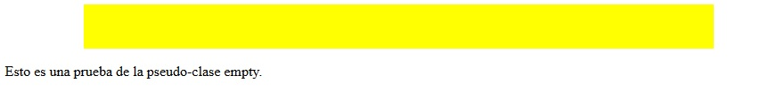
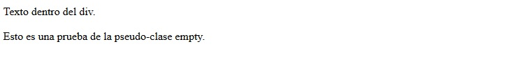

La pseudo-clase empty permite definir una regla css a un elemento html que no tenga elementos hijos y tampoco texto.
Por ejemplo:
<p></p>
Para probar esta pseudo-clase confeccionaremos una página que muestre un rectángulo amarillo cuando el div esté vacío. En caso que el div contenga datos no se mostrará el rectángulo amarillo.
<!DOCTYPE html> <html> <head> <title>Problema</title> <link rel="StyleSheet" href="estilos.css" type="text/css"> </head> <body> <div></div> <p>Esto es una prueba de la pseudo-clase empty.</p> </body> </html>
estilos.css
div:empty {
width:80%;
margin:0 auto;
height:50px;
background-color:yellow;
}
Este estilo se aplica a todos los div vacíos de la página. Tenemos como resultado:
Si probamos agregar algún elemento HTML o texto dentro del div vemos que no cumple la regla de estilo y tenemos como resultado que no aparece el rectángulo amarillo:
Hay que tener cuidado con los elementos HTML que parecen vacíos como por ejemplo:
<div> </div>
Parece vacío el div pero en realidad tiene el salto de línea (estamos en presencia de texto en el div y por lo tanto no se verifica la regla empty)
Para que se aplique la regla de estilo con la pseudo-clase empty el div debe estar escrito en el archivo HTML:
<div></div>